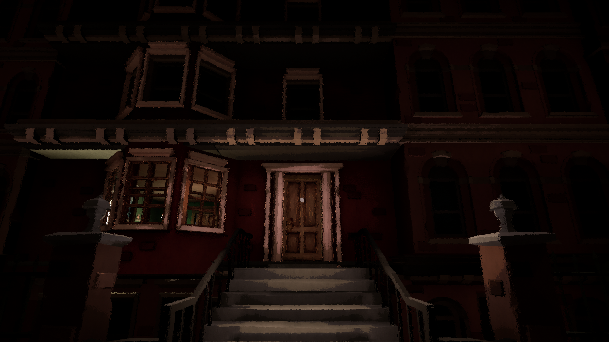

ChangelingVR
ChangelingVR is an Unreal Engine VR first-person interactive mystery built upon the ideas of magical realism and a sense of unease and wonder. You play as a detective named Aurelia, a dream-walker whose gift is the ability to see the thoughts and memories of anyone she touches. This gift makes you a family's last resort in figuring out what is wrong with their baby. As you make contact with each family member, you will see through the lens of their hopes and fears what is left of the baby.
As a generalist programmer and level designer, I was assigned to a level with two other team members to improve upon a level, specifically the first game-level "Mother's Fear." What we started with was a prototype of the level from the previous team, with an established gameplay mechanic and a skeleton of the level design that achieved the goal of the level narrative. It took our team a week of reading through the documentation, analyzing the code and discussing the level's narrative and gameplay goal, for the team to reach a solid plan of what we're adding and improving for the level.

My first responsibility is to update and improve upon the main gameplay mechanic of the level. The main mechanic is essentially the player floating and navigating through fields of floating debris to make it to the end point by tethering themselves to an object and pull themselves towards it. While the version we received in the prototype was serviceable, the gameplay was slow and only served as a vehicle to bring the player from on plot point to the next. After discussion between the team and the project director, we decided to make the most use of the VR controllers and let the player use both controllers to tether to objects and launch themselves forward, which resulted in a more interesting gameplay mechanics and faster pace to the level. The original mechanic also had a UX bug, where some objects do not get highlighted when they are targeted, and this led me to looking into and using shader for the highlighting system.
After we were satisfied with the improvements that we did for the gameplay mechanic, we started working on the level design. The original level design consisted of a circle track, and the player would learn more about the mother character throughout that track. I suggested the idea of adding more verticality to the level to make use of the VR headset more, and the team settled on a spiral design and an obstacle to the player that would enhance the narrative of the level. The level is made up of 4 sections, each assigned to the other family members besides the mother and each introduced and tested the player on different aspects of the gameplay, with the final section a culmination of everything the player had experienced.

The changes we made for the level also massively increased the number of objects in the level, which resulted in a drop in performance in the latter half of our team's development period. This is when we started on optimizing the level. We started by removing parts of the code that was leftover from the prototype that was not necessary but would still be running. With the help of the profiler, I was able to pinpoint and fix a major bug that was running the game processes twice a frame, and causing drops in FPS. And finally, I also made use of Unreal's Sub-levels to sectioned the areas of the level into different sub-levels, only rendering the relevant part during gameplay and obscuring the empty part of the level by creating a fog shader. All of this resulted in an acceptable level of performance even when running the game on the engine, and the build for the level ran smoothly.

This internship was my first experience working on an existing project, and so, it is also my first time interacting and understanding the code from another developer. It is also my first time working on serious optimization, because my previous projects before this are all smaller game projects that don't need much optimization. All in all, this internship had taught me alot about the importance of the other part of game development that is not just programming and creating the game itself, as well as valuable experience working on them.
Learn more about the projecthere